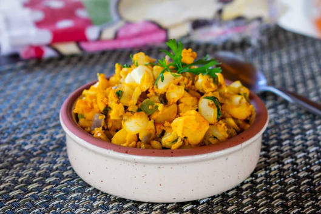

GASTRONOMÍA TÍPICA - AZUAY
01.
MOTE PILLO
El Mote Pillo es un plato típico de la provincia del
Azuay, también se consume en otras regiones del país.
Se le denomina “Mote Pillo porque el huevo, el mote y la
cebolla se mezclan y se “pillan” o combinan entre ellos.
Es una representación de la comida tradicional ecuatoriana
que utiliza ingredientes básicos y locales.
¿Dondé lo puedes disfrutar?
02.
MOTE SUCIO
El Mote Sucio es muy popular en la Provincia del Azuay,
es un plato que recibe su nombre por la apariencia que tiene,
la cual se logra al mezclar el mote con la manteca de cerdo mezclada
con restos de fritada. Puede venir acompañado de fritada o de hornado.
Este espectacular plato se consume en épocas
carnavaleras.
¿Dondé lo puedes disfrutar?
03.
MOTE PATA
El Mote Pata es una gran representación ancestral
culinaria de la Atenas del Ecuador. Este plato se
elabora con mote pelado, carne, costilla de chancho,
tocino, longaniza y semillas de sambo. Su nombre
está formado por palabras de origen quichua: mote, y
pata que viene de "patazhca" que significa muy cocinado.
¿Dondé lo puedes disfrutar?
04.
CUY CON PAPAS
El Cuy con Papas es parte de la cultura ancestral de
los andes ecuatorianos, el cuy desde tiempos memorables,
era parte esencial como ofrenda en el momento de las
fiestas. Su presencia fue vital en las celebraciones de
los cuatro raymis, entre solsticios y equinoccios; es
acompañado de papas enteras, peladas, en salsa de pepa de
zambo, con ensalada de lechuga, tomate, cebolla, ají, etc.
¿Dondé lo puedes disfrutar?
05.
HORNADO
Es un plato típico ecuatoriano de la región serrana del país.
Su origen se remonta a tiempos precolombinos, cuando los
habitantes de la zona cocinaban carne de cerdo bajo tierra,
los indígenas usaban piedras calientes y hojas de plátano.
Lo puedes acompañar con llapingachos, mote pelado, ensalada,
aguacate y ají.
¿Dondé lo puedes disfrutar?
06.
HUMITAS
Las Humitas se les conocía también con el nombre de
humintas o chumales y estas provienen de la palabra
quechua JUMINTA puesto que estas fueron una herencia
que nos dejaron los incasprecolombinos por su exquisito
sabor, están hechas a partir de choclo molido; puedes
degustar este manjar con una buena taza de café o chocolate.
¿Dondé lo puedes disfrutar?
07.
TAMALES
Su historia se remonta a tiempos ancestrales, cuando
las culturas prehispánicas de la región utilizaban el
maíz como uno de sus principales alimentos. Hoy en día,
el tamal cuencano es una verdadera joya gastronómica,
apreciada por propios y extranjeros. En Cuenca los
puedes encontrar en el tradicional barrio “Las Herrerías”.
En épocas navideñas o carnavaleras se suelen prepararlos.
¿Dondé lo puedes disfrutar?
08.
QUIMBOLITOS
Los tradicionales quimbolitos ecuatorianos.
Los quimbolitos o kimbolitos son pasteles dulces
que se cocinan al vapor en hojas de achira.
Se podría decir que los quimbolitos son una especie
de tamal dulce, aunque en realidad son más esponjosos
y tienen sabor a torta o pastel. Los puedes acompañar
con una taza de café o de chocolate.
¿Dondé lo puedes disfrutar?
09.
LOCRO DE PAPAS
No podemos dejar atrás el Locro de Papa.
El Locro es un platillo ancestral que remonta
desde la época prehispánica y en sus inicios sólo
consistía de zapallo, maíz, papas y granos cocinados
en un caldo. Se hace con una papa de mediano tamaño
llamada papa chola locrera, que tiene la particularidad
de soltar bastante almidón, lo que da como resultado
una sopa espesa.
¿Dondé lo puedes disfrutar?
10.
SANCOCHO
El Sancocho es un plato hecho con carne de cerdo
cocida en su grasa en una paila de bronce,
similar a la fritada. Se sirve con mote, maíz
tostado, ensalada, tortillas de papa y el infaltable
ají casero. Esta tradicional comida que se servía en
los hogares cuencanos fue puesta al mercado con el
paso del tiempo.
¿Dondé lo puedes disfrutar?
11.
PAPAS CON CUERO
Las papas con cuero es un plato tradicional oriundo
de la sierra ecuatoriana, muy consumido aquí en la
Provincia del Azuay, consiste en un caldo de piel de
cerdo cocinado con papas y especies. Durante el periodo
histórico de la colonia española en el Ecuador, el cuero
del cerdo era descartado como desecho hasta que los
indígenas lo combinaron con las papas para crear un caldo.
¿Dondé lo puedes disfrutar?
12.
EMPANADAS CON MOROCHO
Empanadas con morocho es un plato típico de la gastronomía
de Cuenca, Ecuador; el relleno suele llevar morocho, queso,
huevo duro picado, cebolla caramelizada, pasas y especias.
Algunas variaciones incluyen carne molida de res o cerdo,
pollo desmenuzado o chorizo. El acompañado especial es la
bebida hecha a base del morocho, hay algunas variantes del
plato ya que también se sirven con una taza de café.
¿Dondé lo puedes disfrutar?

13.
TORTILLAS DE CHOCLO
Las tortillas de choclo son otro plato típico de la
gastronomía de Cuenca, Ecuador. Se preparan a base de choclo
(maíz tierno) previamente cocinado y molido. A esa masa
se le agrega mantequilla, queso fresco, huevos, leche y
especias al gusto. Las tortillas de choclo cuencanas tienen
una textura suave por dentro pero crujiente y dorada por fuera.
¿Dondé lo puedes disfrutar?